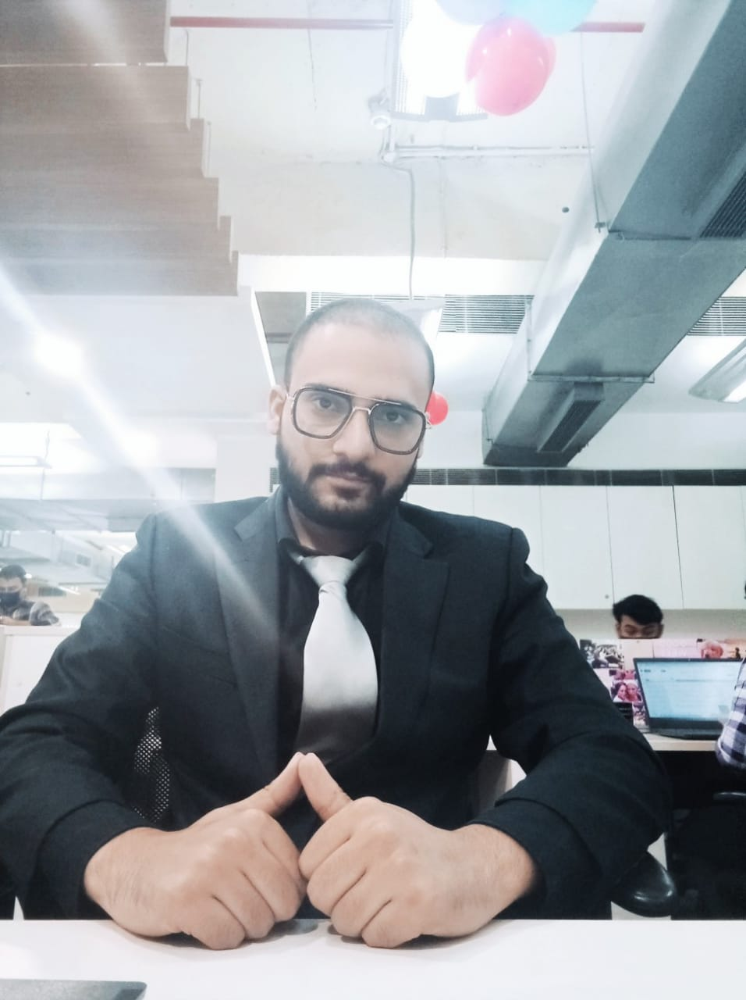

Name

summary
I have experience as product analyst and have hands on experince on python , power bi , tableau and R , during my work experience i got intrested in web development and it seems very exciting career to me hence i am currently learning it well, i know one day i will be one of the best full stack developer in the world
Education
- 1o+2(shardein school , 2014)
8.6 CGPA
- B.sc(Hons)(Subharti University , 2018)
69.3%
- M.B.A(Hons)(A.K.T.U University , 2021)
78.8%
Work experience
Product Analyst(July 2021-Feb 2023) BADABUSINESS.PVT.LTD
I built key metrics regarding app stickiness along with developing wireframes for new features in app , created dashboards for showing daily APP DAU , MAU and spike in trafiic and its root cause analysis using EDA , i have exensive knowledge of python , power bi , R and using this i did various analysis using pyhton and machine learning , i am always eager to learn new twchnologies
Skills
Tech Skills
- Pyhton
- R
- Power Bi
- Tableau
- GA
- Figma
- SQL
- MongoDb
Soft Skills
- Good communication skills
- English
- Hindi
- Good Oratory Skills
Awards
till now none